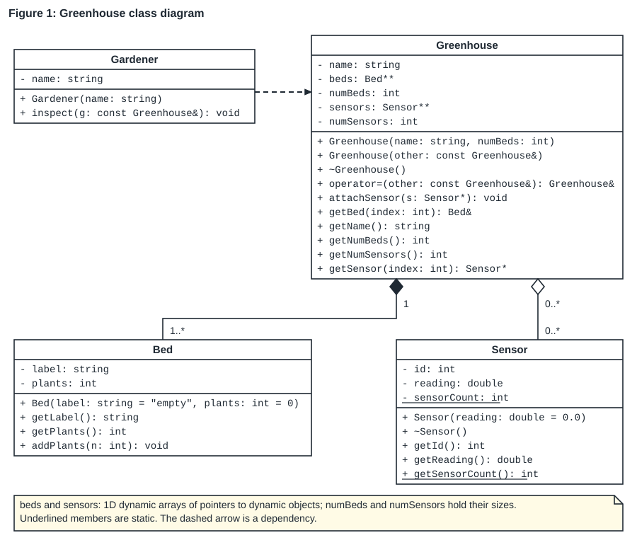
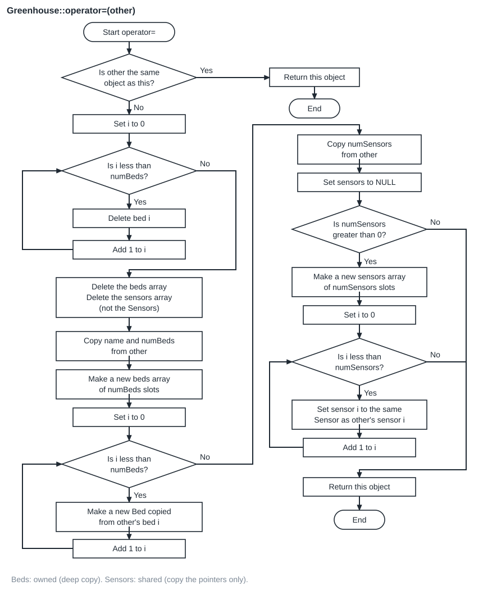
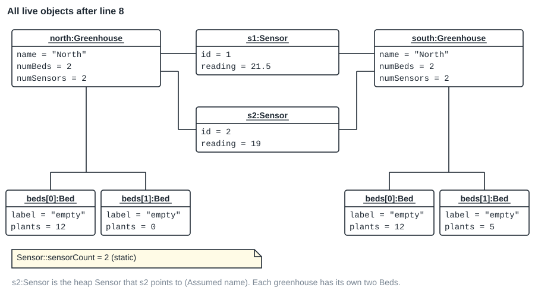
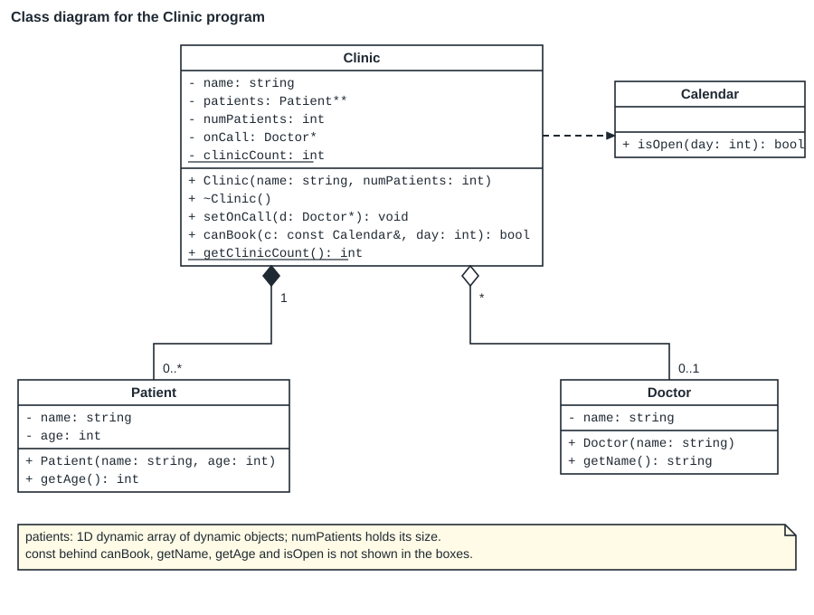

Write the whole paper before you open an answer. Outputs and messages come from g++ 13 with -std=c++98 -Wall -Werror and from valgrind. Mark splits and file names that no paper states are labelled Assumed.
Questions
Section A: short questions (22 marks)
1. Default access in a struct and a class [1]
Read the question
Which marked line does not compile?
main.cpp
#include <iostream>
struct Record {
int value;
};
class Counter {
int count;
public:
void set(int c) {
count = c;
}
};
int main() {
Record r;
Counter k;
r.value = 5; // line A
k.set(5); // line B
k.count = 5; // line C
std::cout << r.value << std::endl;
return 0;
}- A. Line A only
- B. Line B only
- C. Line C only
- D. Lines B and C
Worked solution
Answer: C.
count is declared before any access specifier in a class, so it is private. Line C reads it from main, outside the class. g++ stops with:
main.cpp:21:5: error: ‘int Counter::count’ is private within this contextLine A is fine: a struct member is public by default. Line B is fine: set is public and it may change the private count because it is a member function. So A, B and D are wrong.
2. Empty brackets after an object name [1]
Read the question
The class Author has the constructor Author(std::string n = "Unknown", int b = 0). What does the statement Author a3(); inside main do?
- A. It creates an Author called a3 with the default values "Unknown" and 0.
- B. It declares a function a3 that takes no parameters and returns an Author.
- C. It creates a3 on the heap.
- D. It calls the copy constructor.
Worked solution
Answer: B (Tutorial 4, slide 17).
C++ reads Author a3(); as the declaration of a function. To create an object with the default values, write Author a3; with no brackets. When the next line uses a3 as an object, g++ 13 with -Wall -Werror prints:
main.cpp:17:12: error: empty parentheses were disambiguated as a function declaration [-Werror=vexing-parse]
main.cpp:18:19: error: request for member ‘getName’ in ‘a3’, which is of non-class type ‘Author()’A is what the writer meant, but not what C++ does. C is wrong: only new creates a heap object. D is wrong: no object is passed in.
3. Copy constructor or assignment operator [1]
Read the question
Box has a copy constructor and an assignment operator. b1 and b2 already exist. Which statement calls the copy constructor?
- A. b2 = b1;
- B. Box b3 = b1;
- C. byReference(b1); where the parameter is const Box&
- D. Box b4(4);
Worked solution
Answer: B.
Box b3 = b1; creates a new object b3 from b1. The = here belongs to a declaration, so it is not an assignment. A run of the program below prints copy of 1 -> 11 for that line, and operator= only for b3 = b2;:
line 3: Box b3 = b1;
copy of 1 -> 11A assigns to an object that already exists, so operator= runs. C passes a reference, so no object is made. D calls the constructor that takes an int.
main.cpp
#include <iostream>
class Box {
private:
int id;
public:
Box(int id) : id(id) {
std::cout << " Box(" << id << ")" << std::endl;
}
Box(const Box& other) : id(other.id + 10) {
std::cout << " copy of " << other.id << " -> " << id << std::endl;
}
Box& operator=(const Box& other) {
std::cout << " operator= " << id << " gets " << other.id << std::endl;
id = other.id;
return *this;
}
~Box() {
std::cout << " ~Box " << id << std::endl;
}
};
void byValue(Box b) {
std::cout << " inside byValue" << std::endl;
}
void byReference(const Box& b) {
std::cout << " inside byReference" << std::endl;
}
int main() {
std::cout << "line 1: Box b1(1);" << std::endl;
Box b1(1);
std::cout << "line 2: Box b2(b1);" << std::endl;
Box b2(b1);
std::cout << "line 3: Box b3 = b1;" << std::endl;
Box b3 = b1;
std::cout << "line 4: byValue(b1);" << std::endl;
byValue(b1);
std::cout << "line 5: byReference(b1);" << std::endl;
byReference(b1);
std::cout << "line 6: b3 = b2;" << std::endl;
b3 = b2;
std::cout << "end of main" << std::endl;
return 0;
}4. One constructor, two jobs [2]
Read the question
Complete the sentence about this constructor:
Item(float value = 0.0f, int size = 0, std::string text = "");(a) It is a ________ constructor because ...
(b) It is also a ________ constructor because ...
Worked solution
It is a default constructor because every parameter has a default argument, so it can be called with no arguments (Item a;). (1 mark)
It is also a conversion (converting) constructor because it can be called with one argument, so a float can be turned into an Item automatically, for example when it is passed to a const Item& parameter. (1 mark)
The run below calls show(2.5f) where show takes const Item&. It compiles, and the temporary Item holds 2.5:
0 0 []
2.5 0 []main.cpp
#include <iostream>
#include <string>
class Item {
private:
float value;
int size;
std::string text;
public:
Item(float value = 0.0f, int size = 0, std::string text = "")
: value(value), size(size), text(text) {}
void print() const {
std::cout << value << " " << size << " [" << text << "]" << std::endl;
}
};
void show(const Item& item) {
item.print();
}
int main() {
Item a;
a.print();
show(2.5f);
return 0;
}5. Trace a static counter [3]
Read the question
Write down exactly what this program prints.
main.cpp
#include <iostream>
class Ticket {
private:
int number;
static int issued;
static int active;
public:
Ticket() {
issued++;
active++;
number = issued;
}
~Ticket() {
active--;
}
void print() const {
std::cout << number << "/" << active << " ";
}
static int getIssued() {
return issued;
}
};
int Ticket::issued = 0;
int Ticket::active = 0;
int main() {
Ticket a;
a.print();
for (int i = 0; i < 2; i++) {
Ticket t;
t.print();
}
Ticket* p = new Ticket;
p->print();
delete p;
Ticket b;
b.print();
std::cout << Ticket::getIssued() << std::endl;
return 0;
}Worked solution
1/1 2/2 3/2 4/2 5/2 5One mark for the first three numbers, one for the heap ticket, one for the last two numbers. The key idea: issued only goes up, while active goes down in the destructor.
| Statement | issued | active | Printed |
|---|---|---|---|
| Ticket a; a.print(); | 1 | 1 | 1/1 |
| loop i = 0: Ticket t; t.print(); | 2 | 2 | 2/2 |
| end of that pass: t destroyed | 2 | 1 | |
| loop i = 1: Ticket t; t.print(); | 3 | 2 | 3/2 |
| end of that pass: t destroyed | 3 | 1 | |
| Ticket* p = new Ticket; p->print(); | 4 | 2 | 4/2 |
| delete p; | 4 | 1 | |
| Ticket b; b.print(); | 5 | 2 | 5/2 |
| Ticket::getIssued() | 5 | 2 | 5 |
The loop runs while i < 2: for i = 0 and i = 1 the condition is true; at i = 2 it is false and the loop stops. Each pass makes a new t and destroys it at the closing brace of the loop body.
6. Trace constructors, copies and destructors [4]
Read the question
Write down exactly what this program prints. It prints two lines.
main.cpp
#include <iostream>
#include <string>
class Note {
private:
std::string text;
public:
Note(std::string t = "blank") : text(t) {
std::cout << "N(" << text << ") ";
}
Note(const Note& o) : text(o.text + "*") {
std::cout << "C(" << text << ") ";
}
Note& operator=(const Note& o) {
text = o.text;
std::cout << "A(" << text << ") ";
return *this;
}
~Note() {
std::cout << "~" << text << " ";
}
};
class Folder {
private:
Note label;
public:
Folder(std::string t) : label(t) {
std::cout << "F ";
}
~Folder() {
std::cout << "~F ";
}
};
void show(Note n) {
std::cout << "show ";
}
int main() {
Note a("x");
Note b = a;
show(b);
{
Folder f("y");
}
Note c;
c = a;
std::cout << std::endl;
return 0;
}Worked solution
N(x) C(x*) C(x**) show ~x** N(y) F ~F ~y N(blank) A(x)
~x ~x* ~x | Statement in main | What runs | Printed |
|---|---|---|
| Note a("x"); | constructor | N(x) |
| Note b = a; | copy constructor (b is new) | C(x*) |
| show(b); | copy constructor for the value parameter n, the body, then n is destroyed | C(x**) show ~x** |
| Folder f("y"); | member label first (initialisation list), then the Folder body | N(y) F |
| closing brace of the block | ~Folder body first, then its member | ~F ~y |
| Note c; | constructor with the default argument | N(blank) |
| c = a; | assignment operator (c already exists) | A(x) |
| std::cout << std::endl; | ends line 1 | |
| end of main | c, b, a destroyed in reverse order of construction | ~x ~x* ~x |
Marks: 1 for the copy in show (C(x**) and ~x**), 1 for the Folder order, 1 for A(x) with no destructor call, 1 for the reverse order on line 2. Spaces at line ends are not marked (Assumed).
7. Find the errors: const, static and a const member [4]
Read the question
The lines marked L1 to L5 start a definition. For each marked line, say whether it has a compilation error. If it does, explain the error in one sentence. Marks are subtracted if correct code is called an error. Then rewrite the definition that starts at L2 so that it compiles. (3 marks for the errors with reasons, 1 mark for the rewrite.)
main.cpp
#include <iostream>
class Meter {
private:
double value;
static int meterCount;
const int serial;
public:
Meter(double v, int s);
double getValue() const;
void reset() const;
static int getCount();
};
int Meter::meterCount = 0; // L1
Meter::Meter(double v, int s) { // L2
value = v;
serial = s;
meterCount++;
}
double Meter::getValue() const { // L3
return value;
}
void Meter::reset() const { // L4
value = 0;
}
static int Meter::getCount() { // L5
return meterCount;
}
int main() {
Meter m(2.5, 7);
std::cout << m.getValue() << " " << Meter::getCount() << std::endl;
return 0;
}Worked solution
| Line | Error? | Reason |
|---|---|---|
| L1 | No | This is the required definition of the static member, outside the class, without the word static. |
| L2 | Yes | serial is a const member. It must get its value in the initialisation list; the body cannot assign to it. |
| L3 | No | A const member function may read members. |
| L4 | Yes | reset is const, so it promises not to change the object, but it assigns to value. |
| L5 | Yes | The word static may only appear inside the class. Repeated on the definition it is an error. |
g++ 13 reports these errors for L2, L4 and L5:
main.cpp:18:1: error: uninitialized const member in ‘const int’ [-fpermissive]
main.cpp:20:10: error: assignment of read-only member ‘Meter::serial’
main.cpp:29:9: error: assignment of member ‘Meter::value’ in read-only object
main.cpp:32:28: error: cannot declare member function ‘static int Meter::getCount()’ to have static linkage [-fpermissive]One mark per error with its reason (3). One mark for the rewritten constructor:
Meter::Meter(double v, int s) : value(v), serial(s) {
meterCount++;
}The fixed program (L4 without const, L5 without static) builds and is valgrind clean. Its main adds m.reset(); and a second print, so it prints two lines:
2.5 1
08. Three meanings of const [3]
Read the question
The class Plot declares this member function:
const Plot& larger(const Plot& other) const;For each of the three const keywords, write one statement that the keyword would stop from compiling, and say where the statement would be (inside larger or in the calling code).
Worked solution
Any statement with the same effect earns the mark. These three were each compiled, and each fails:
| const | Statement that fails | Where |
|---|---|---|
first: the return type const Plot& | p.larger(q).grow(5); | calling code: the returned Plot cannot be changed |
second: the parameter const Plot& other | other.grow(5); | inside larger: the Plot passed in cannot be changed |
| third: behind the brackets | area = 0; (or grow(5);) | inside larger: the object larger is called on cannot be changed |
main.cpp:28:19: error: passing ‘const Plot’ as ‘this’ argument discards qualifiers [-fpermissive]main.cpp:19:13: error: passing ‘const Plot’ as ‘this’ argument discards qualifiers [-fpermissive]main.cpp:19:8: error: assignment of member ‘Plot::area’ in read-only objectThe correct version builds and prints the larger area:
const Plot& Plot::larger(const Plot& other) const {
if (other.area > area) {
return other;
}
return *this;
}459. The copy constructor parameter [2]
Read the question
A copy constructor is declared as Greenhouse(const Greenhouse& other);.
(a) Why must the parameter be a reference and not Greenhouse other? (1)
(b) Why is the reference const? (1)
Worked solution
(a) Passing an object by value makes a copy, and making a copy calls the copy constructor. A by-value copy constructor would call itself again and again, without end. C++ does not allow it; g++ stops with:
main.cpp:9:3: error: invalid constructor; you probably meant ‘Score (const Score&)’(b) const promises that copying does not change the original, and it allows copying from a const object or from a temporary.
10. Many constructors, one destructor [1]
Read the question
A class can have several constructors but only one destructor. Explain why.
Worked solution
A destructor takes no parameters (and has no return type), so there is nothing to tell two destructors apart: it cannot be overloaded. It is called automatically, when the object goes out of scope or is deleted, so no arguments could be passed to it anyway. Constructors differ by their parameter lists, so they can be overloaded.
A destructor with a parameter does not compile:
main.cpp:3:3: error: destructors may not have parametersSection B: the Greenhouse scenario (28 marks)
11. Visibility to C++ [1]
Read the question
Questions 11 to 17 use the Greenhouse class diagram in Figure 1. A greenhouse owns its beds: when it is destroyed, its beds are destroyed too. It only points at sensors, which are created and destroyed outside it, and several greenhouses may share one sensor. A gardener only uses a greenhouse while inspecting it.

C++98 only. Write member functions outside the class (no inline code).
(a) Under which C++ access specifier is beds declared in Greenhouse.h? (0.5)
(b) Under which C++ access specifier is attachSensor declared? (0.5)
Worked solution
(a) private: because of the - in front of beds. (b) public: because of the + in front of attachSensor.
12. Define the static member [1]
Read the question
In Figure 1, sensorCount is underlined. Write the single C++ statement in Sensor.cpp that defines it and sets it to 0.
Worked solution
int Sensor::sensorCount = 0;Underlined means static. The definition goes outside the class, uses the class name and ::, and does not repeat the word static. The scenario program uses exactly this line in Sensor.cpp and builds:
int Sensor::sensorCount = 0;13. Does it need a destructor? [2]
Read the question
(a) Does Bed need a destructor that you write yourself? Explain. (1)
(b) Does Greenhouse need one? Explain, using the relationships in Figure 1. (1)
Worked solution
(a) No. Bed has only a string and an int. It allocates no dynamic memory, so the destructor C++ provides is enough (the string cleans up after itself).
(b) Yes. Greenhouse allocates two dynamic arrays (beds and sensors) and, because of the composition (filled diamond), it also owns every Bed object in beds. The implicit destructor frees none of that. Its destructor must delete each Bed, then the beds array, then the sensors array, but not the Sensor objects (aggregation, hollow diamond).
Evidence: with an empty destructor body, valgrind reports the lost memory:
definitely lost: 64 bytes in 4 blocks
indirectly lost: 160 bytes in 4 blocksWith the destructor below, the same program is valgrind clean:
Greenhouse::~Greenhouse() {
for (int i = 0; i < numBeds; i++) {
delete beds[i];
}
delete[] beds;
delete[] sensors;
}14. Implement the Sensor constructor and destructor [3]
Read the question
Implement the Sensor constructor and destructor outside the class (in Sensor.cpp). (2 marks for the constructor, 1 for the destructor.)
- The constructor must use an initialisation list for
reading, or it earns no marks. - Each new sensor adds 1 to
sensorCount, and itsidis the new value ofsensorCount(the first sensor gets id 1). - The destructor takes 1 off
sensorCount.
Worked solution
Sensor::Sensor(double reading) : reading(reading) {
sensorCount++;
id = sensorCount;
}Sensor::~Sensor() {
sensorCount--;
}Marks: initialisation list for reading (1), count then id in that order (1), destructor (1). The default argument = 0.0 stays in the header only.
Test main and output (a and b get ids 1 and 2; after delete b, c gets id 2 again because the count went back to 1):
main.cpp
#include <iostream>
#include "Sensor.h"
int main() {
Sensor a(21.5);
Sensor* b = new Sensor(19.0);
std::cout << a.getId() << " " << b->getId() << " " << Sensor::getSensorCount() << std::endl;
delete b;
Sensor c;
std::cout << c.getId() << " " << c.getReading() << " " << Sensor::getSensorCount() << std::endl;
return 0;
}1 2 2
2 0 2Common slip: id = sensorCount; before sensorCount++;. The same test then prints ids that start at 0:
0 1 2
1 0 215. Implement the Greenhouse constructor [4]
Read the question
Implement Greenhouse(name: string, numBeds: int) outside the class. (4 marks: one for each point below.)
- Use an initialisation list for
nameandnumBeds. - If
numBedsis less than 1, throw the string "Invalid number of beds" before any memory is allocated. - Otherwise create the
bedsarray with one defaultBedobject in each element. - A new greenhouse has no sensors:
sensorsis NULL andnumSensorsis 0.
Worked solution
Greenhouse::Greenhouse(std::string name, int numBeds) : name(name), numBeds(numBeds) {
if (numBeds < 1) {
throw "Invalid number of beds";
}
beds = new Bed*[numBeds];
for (int i = 0; i < numBeds; i++) {
beds[i] = new Bed();
}
sensors = NULL;
numSensors = 0;
}Marks: initialisation list (1), check and throw first (1), array of Bed* and one new Bed() per element (1), sensors NULL and 0 (1).
| Condition | True means | False means |
|---|---|---|
numBeds < 1 | no valid greenhouse: throw before allocating anything | go on and allocate |
| i | i < numBeds (numBeds = 3) | Action |
|---|---|---|
| 0 | true | beds[0] = new Bed() |
| 1 | true | beds[1] = new Bed() |
| 2 | true | beds[2] = new Bed() |
| 3 | false | loop ends |
Test and output:
main.cpp
#include <iostream>
#include "Greenhouse.h"
int main() {
Greenhouse g("East", 3);
std::cout << g.getName() << " " << g.getNumBeds() << " " << g.getNumSensors() << " "
<< g.getBed(2).getLabel() << std::endl;
try {
Greenhouse bad("Bad", 0);
} catch (const char* message) {
std::cout << message << std::endl;
}
return 0;
}East 3 0 empty
Invalid number of bedsWhy the check comes first: a version that allocates the array and then throws leaks it, because the destructor never runs for an object whose constructor threw. With numBeds = 0 valgrind reports:
definitely lost: 0 bytes in 1 blocks16. Flowchart: the Greenhouse assignment operator [7]
Read the question
Draw a flowchart, in DrawIO, for operator=(other: const Greenhouse&): Greenhouse&. Use COS 132 notation and describe each step in words; nodes that only hold code lose marks.
- The object must end with the same name, the same beds (as its own copies) and the same sensors as
other. - No memory may leak, and nothing may be deleted twice. Use the relationships in Figure 1 to decide what is copied and what is shared.
- Assigning an object to itself must leave it unchanged.
Save the file as Q16.drawio (Assumed file name).
Worked solution

The flowchart follows the compiled operator below step for step (the instrumented run is shown after it).
Greenhouse& Greenhouse::operator=(const Greenhouse& other) {
if (this == &other) {
return *this;
}
for (int i = 0; i < numBeds; i++) {
delete beds[i];
}
delete[] beds;
delete[] sensors;
name = other.name;
numBeds = other.numBeds;
beds = new Bed*[numBeds];
for (int i = 0; i < numBeds; i++) {
beds[i] = new Bed(*other.beds[i]);
}
numSensors = other.numSensors;
sensors = NULL;
if (numSensors > 0) {
sensors = new Sensor*[numSensors];
for (int i = 0; i < numSensors; i++) {
sensors[i] = other.sensors[i];
}
}
return *this;
}| Marks (7) | What earns them |
|---|---|
| 1 | Start and end terminators; the end returns the object (return this object) |
| 1 | Self-assignment decision first, with the Yes branch going straight to the end |
| 1 | A loop that deletes each old Bed, then the old beds array |
| 1 | Delete the old sensors array only, not the Sensor objects (aggregation) |
| 1 | Copy name and numBeds; new beds array; a loop that creates a new Bed copy for each of other's beds (composition: deep copy) |
| 1 | Copy numSensors; a decision on numSensors > 0; a new sensors array whose elements point at the same Sensors as other (shared) |
| 1 | Correct notation: ovals, rectangles, diamonds with Yes/No, arrows; steps in words (Assumed split of the 7 marks) |
Instrumented run (south = north; then south = south;):
self: 0
bed 0 copied: 12
bed 1 copied: 0
sensor 0 shared: id 1
sensor 1 shared: id 2
self: 1
0 5 1 2| Loop (south = north) | Pass | Test | Body |
|---|---|---|---|
| copy beds | i = 0 | 0 < 2 true | new Bed copied from bed 0 (12 plants) |
| copy beds | i = 1 | 1 < 2 true | new Bed copied from bed 1 (0 plants) |
| copy beds | i = 2 | 2 < 2 false | loop ends |
| share sensors | i = 0 | 0 < 2 true | sensors[0] = the Sensor with id 1 |
| share sensors | i = 1 | 1 < 2 true | sensors[1] = the Sensor with id 2 |
| share sensors | i = 2 | 2 < 2 false | loop ends |
A common wrong answer also deletes the Sensor objects. Add the line north = south; after south = north; and run it: the wrong operator deletes s1 (a local object, not made with new) and *s2 while south still points at them, and main later deletes s2 again. valgrind reports:
Invalid free() / delete / delete[] / realloc()17. Object diagram after line 8 [5]
Read the question
The program below uses the Greenhouse classes of Figure 1. In DrawIO, draw the UML object diagram of every object that is alive straight after line 8 has run. Show each object's attribute values, the array elements as objects (for example beds[0]:Bed), and the links between objects. Show the value of the static sensorCount in a note. Save the file as Q17.drawio (Assumed file name).
main.cpp
#include <iostream>
#include "Greenhouse.h"
int main() {
Sensor s1(21.5); // line 1
Sensor* s2 = new Sensor(19.0); // line 2
Greenhouse north("North", 2); // line 3
north.getBed(0).addPlants(12); // line 4
north.attachSensor(&s1); // line 5
north.attachSensor(s2); // line 6
Greenhouse south(north); // line 7
south.getBed(1).addPlants(5); // line 8
delete s2; // line 9
std::cout << Sensor::getSensorCount() << std::endl;
return 0;
}Worked solution

The values come from an instrumented copy of the program that prints the state after line 8:
after line 8
s1: id 1, reading 21.5
*s2: id 2, reading 19
North (north): numBeds 2, numSensors 2
beds[0]: label empty, plants 12, address north's
beds[1]: label empty, plants 0, address north's
sensors[0]: id 1
sensors[1]: id 2
North (south): numBeds 2, numSensors 2
beds[0]: label empty, plants 12, address own
beds[1]: label empty, plants 5, address own
sensors[0]: id 1
sensors[1]: id 2
sensorCount 2
1| Marks (5) | What earns them |
|---|---|
| 1 | s1 and the heap sensor with ids 1 and 2 and their readings |
| 1 | north and south with name, numBeds and numSensors (south's name is "North": the copy constructor copies the name) |
| 1 | Four Bed objects: north has its own two beds and south has its own two (composition: deep copy), with plants 12, 0 and 12, 5 |
| 1 | Both greenhouses link to the same two Sensor objects (aggregation: shared) |
| 1 | Notation: underlined name:Class, attr = value slots, the note with sensorCount = 2 (Assumed split of the 5 marks) |
Naming (Assumed, as in the notes): the heap Sensor is named after the pointer that reaches it, s2; array elements are named beds[0] and so on, as in Semester Test 1 (2026).
18. Code to class diagram [5]
Read the question
In DrawIO, draw the complete UML class diagram for the classes in this program: every attribute and operation with its visibility and types, static members underlined, the relationships between the classes with their multiplicities, and a note for each dynamic array. Use the comments above Clinic to decide the relationships. Save the file as Q18.drawio (Assumed file name).
main.cpp
#include <iostream>
#include <string>
class Doctor {
private:
std::string name;
public:
Doctor(std::string name) : name(name) {}
std::string getName() const {
return name;
}
};
class Patient {
private:
std::string name;
int age;
public:
Patient(std::string name, int age) : name(name), age(age) {}
int getAge() const {
return age;
}
};
class Calendar {
public:
bool isOpen(int day) const {
return day >= 1 && day <= 5;
}
};
// A clinic owns its patients' records: they are deleted with the clinic.
// The doctor on call works at many clinics and is never deleted by a clinic.
class Clinic {
private:
std::string name;
Patient** patients;
int numPatients;
Doctor* onCall;
static int clinicCount;
public:
Clinic(std::string name, int numPatients);
~Clinic();
void setOnCall(Doctor* d);
bool canBook(const Calendar& c, int day) const;
static int getClinicCount();
};
int Clinic::clinicCount = 0;
Clinic::Clinic(std::string name, int numPatients)
: name(name), numPatients(numPatients), onCall(NULL) {
patients = new Patient*[numPatients];
for (int i = 0; i < numPatients; i++) {
patients[i] = new Patient("unknown", 0);
}
clinicCount++;
}
Clinic::~Clinic() {
for (int i = 0; i < numPatients; i++) {
delete patients[i];
}
delete[] patients;
clinicCount--;
}
void Clinic::setOnCall(Doctor* d) {
onCall = d;
}
bool Clinic::canBook(const Calendar& c, int day) const {
return onCall != NULL && c.isOpen(day);
}
int Clinic::getClinicCount() {
return clinicCount;
}
int main() {
Doctor dlamini("Dr Dlamini");
Calendar week;
Clinic hatfield("Hatfield", 2);
hatfield.setOnCall(&dlamini);
std::cout << hatfield.canBook(week, 3) << " " << Clinic::getClinicCount() << std::endl;
return 0;
}Worked solution

| Marks (5) | What earns them |
|---|---|
| 1 | Clinic box: all five attributes with types (patients: Patient**, onCall: Doctor*), clinicCount and getClinicCount() underlined |
| 1 | The other three boxes complete, with - and + as in the code |
| 1 | Clinic to Patient: composition (filled diamond at Clinic), 1 to 0..*: the destructor deletes every Patient |
| 1 | Clinic to Doctor: aggregation (hollow diamond at Clinic), * to 0..1: the clinic stores a pointer but never deletes the doctor; Clinic to Calendar: dependency (dashed arrow), Calendar is only a parameter |
| 1 | A note on patients ("1D dynamic array of dynamic objects"), and the parameter names written as name: type (Assumed split of the 5 marks) |
The diagram omits const behind canBook, getName, getAge and isOpen: UML has no notation for it (Tutorial 4). A note can say so.
The program compiles and runs (valgrind clean), so the types in the diagram are the real ones:
1 1